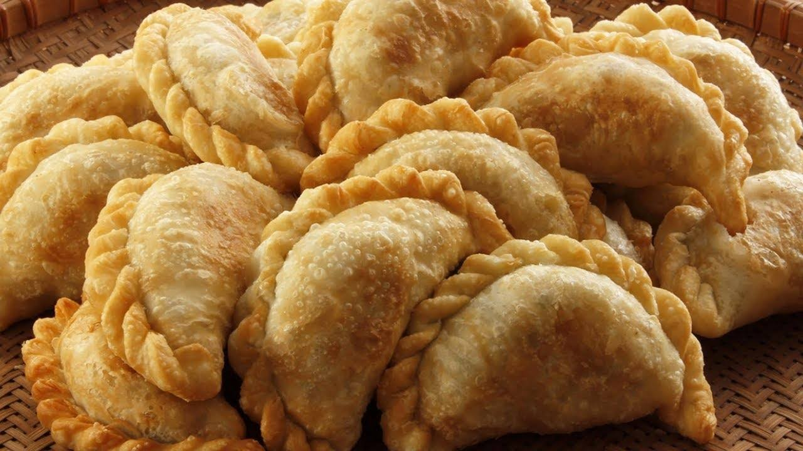

Recipe of empanadas

Description
An empanada is a thin bread dough, shortcrust pastry or puff pastry filled with a salty or sweet preparation and baked or fried. The filling can include red or white meat, fish, vegetables or fruit.
Ingredients
- 24 empanada lid
- 1 Kg minced meat
- 3 Green onion
- ground chili
- cumin
- Oil
- Salt and pepper
- Olives
- hard-boiled egg
Steps
- las cebollas blancas y de verdeo
- la manteca y el aceite en una olla e incorporar las cebollas. Saltearlas hasta que estén transparentes.
- Agregar la carne picada y cocinar hasta que la carne cambie su color.
- Apagar el fuego y condimentar con la sal, pimienta, el ají molido y el comino.
- Dejar enfriar y llevar a la heladera (preferiblemente por algunas horas).
- Agregar al relleno las aceitunas, las pasas y el huevo duro cortados y mezclar.
- Armar las empanadas, pintarlas con huevo batido.
- Cocinar en horno moderado previamente recalentado hasta dorar.